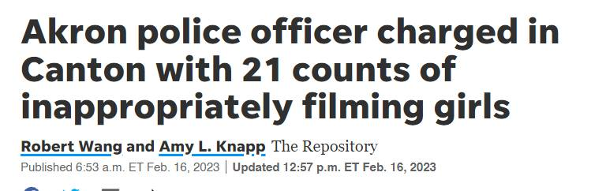

Timeline photos
Akron police officer, Mikel J. Dillon, was arrested for repeatedly filming a nude 11 year old girl.
So far there is no comment from APD.
The most disgusting part of these kinds of stories isn't that there are monsters in the world. We all know that.
What's most disgusting is that the public relations team at the APD and the police union are strategizing what to say to minimize damage while not being too hard on a brother in blue.
The cover-up process is the worst part of it.
If we want to end pedophilia we must learn to separate those who think about sexually engaging with children and people that actually sexually engage with children.
We lump them both together. But they are wildly different.
Approximately 1 to 5% of the male population is estimated to have pedophilia, that is, a sexual interest in children.
Despite common misperceptions, pedophilia is neither a necessary nor sufficient precondition for sexual offending against children. In fact, an unknown, but most likely substantial number of people with a sexual preference for children never commit sexual offenses, and an estimated 40–60 percent of sexual offenses against children are not committed by people with pedophilic interests.
Having a public that is informed about the difference between pedophilia as a sexual preference versus child sexual abuse as a sexual offense most likely represents an important precondition for the success of preventive measures against child sexual abuse. As one of the main sources of information about pedophilia, the media has a great responsibility to portray pedophilia realistically and to dispel common and harmful myths.
That's all from here:
https://www.ncbi.nlm.nih.gov/pmc/articles/PMC7460489/
If you actually care about children you will take an interest in learning more about this condition.
If you just hate pedophiles the only thing that will happen is more headlines like this.
#sageforakron8